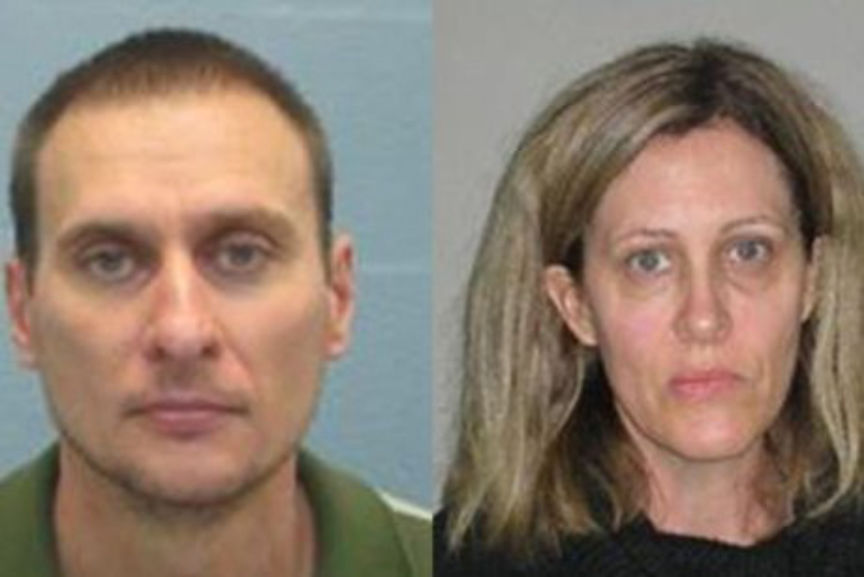
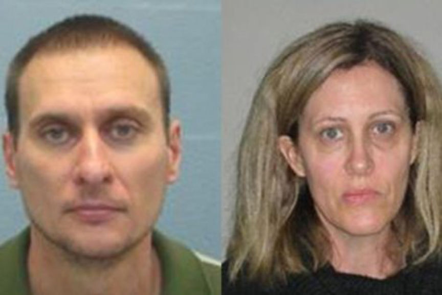

Australian Couple Ran a Darkweb Drug Trafficking Operation
~3 min read | Published on 2019-09-28, tagged Darkweb-Vendor, Drugs, Pleaded-Guilty using 573 words.
An Australian couple that pleaded guilty to dark web drug trafficking has been sentenced to a total of 15 years in prison. The Queensland Police believe the couple was running the largest dark web drug trafficking operation in Queensland. The couple reportedly distributed heroin, amphetamine, and marijuana.
Jonathan Grey 43, and Kathleen Ann 48 appeared before Supreme Court Justice James Douglas in the Brisbane Court for their sentencing hearing. The prosecution told the court that the couple sold drugs on the dark web for one year up to their arrest on September 2016. It was disclosed that Jonathan imported MDMA and heroin from the Netherlands on the dark web for resale and that he grew the marijuana. Ann’s involvement was minimal as she only offered help when needed; she, however, played a significant role in spending the profits derived from the illicit trade.
The investigations that led to the couple’s arrest revealed that Jonathan’s profile on an undisclosed dark web marketplace showed that he had completed more than 600 orders and sold drugs worth more than $270,000. The investigators also established that Jonathan used a bitcoin mixer and encrypted messaging. This, however, did not stop the investigators from gathering evidence that enabled them to acquire a search warrant against the couple’s property.
In the couple’s home, the investigators found a room that Jonathan used as an office to ran the drug trafficking operation. In the room, the cops found and seized computers, a mobile phone, and records of mail addresses and tracking numbers. The investigators also searched a second property where they found and confiscated drugs packaging equipment and cannabis plants.
The couple was arrested and placed in police custody after which they were released on bail and ordered to appear in court on December 2016. The couple, however, violated the bail terms, fled to Adelaide, South Australia and failed to appear in court on the scheduled date. Jonathan also resumed selling drugs. The couple was as a result placed in Australia’s list of most wanted fugitives. They were arrested in an Adelaide suburb in July 2018 just a few days after being added to the list. After the arrest, the couple was put in jail and denied bail.
The court was also made aware of the fact the couple used proceeds from the drug trafficking operation to fund a lavish lifestyle. They drove a Porsche and BMW. The Crime and Corruption Commission of Queensland initiated criminal confiscation proceedings against the couple and won. The couple was, as a result, forced to forfeit assets worth more than $202,000.
In Kathleen’s defense, Attorney Lars Falcongreen told the court that following the criminal proceedings his client grew anxious and left for Adelaide to join his husband. He also said the jail time had separated the couple and their daughters. Jonathan’s Attorney Colin Reid said his client is free of cocaine addiction and is also remorseful.
At the end of the trial, Justice Douglas said the couple’s operation was the worst example of sophisticated trafficking he has ever come across. He also said the operation’s magnitude was significant and demonstrated Jonathan’s long experience. The judge also admitted the role played by Kathleen in the operation was minimal.
Justice Douglas finally sentenced Kathleen to 6 years in prison and Jonathan to 9 years. The time they have already served means Kathleen is eligible for parole in November while Jonathan is eligible from August 2021.
Jonathan Grey 43, and Kathleen Ann 48 appeared before Supreme Court Justice James Douglas in the Brisbane Court for their sentencing hearing. The prosecution told the court that the couple sold drugs on the dark web for one year up to their arrest on September 2016. It was disclosed that Jonathan imported MDMA and heroin from the Netherlands on the dark web for resale and that he grew the marijuana. Ann’s involvement was minimal as she only offered help when needed; she, however, played a significant role in spending the profits derived from the illicit trade.
Jonathan Grey and Kathleen Ann in their booking photos | credit: ABC
The investigations that led to the couple’s arrest revealed that Jonathan’s profile on an undisclosed dark web marketplace showed that he had completed more than 600 orders and sold drugs worth more than $270,000. The investigators also established that Jonathan used a bitcoin mixer and encrypted messaging. This, however, did not stop the investigators from gathering evidence that enabled them to acquire a search warrant against the couple’s property.
In the couple’s home, the investigators found a room that Jonathan used as an office to ran the drug trafficking operation. In the room, the cops found and seized computers, a mobile phone, and records of mail addresses and tracking numbers. The investigators also searched a second property where they found and confiscated drugs packaging equipment and cannabis plants.
The couple was arrested and placed in police custody after which they were released on bail and ordered to appear in court on December 2016. The couple, however, violated the bail terms, fled to Adelaide, South Australia and failed to appear in court on the scheduled date. Jonathan also resumed selling drugs. The couple was as a result placed in Australia’s list of most wanted fugitives. They were arrested in an Adelaide suburb in July 2018 just a few days after being added to the list. After the arrest, the couple was put in jail and denied bail.
The court was also made aware of the fact the couple used proceeds from the drug trafficking operation to fund a lavish lifestyle. They drove a Porsche and BMW. The Crime and Corruption Commission of Queensland initiated criminal confiscation proceedings against the couple and won. The couple was, as a result, forced to forfeit assets worth more than $202,000.
In Kathleen’s defense, Attorney Lars Falcongreen told the court that following the criminal proceedings his client grew anxious and left for Adelaide to join his husband. He also said the jail time had separated the couple and their daughters. Jonathan’s Attorney Colin Reid said his client is free of cocaine addiction and is also remorseful.
At the end of the trial, Justice Douglas said the couple’s operation was the worst example of sophisticated trafficking he has ever come across. He also said the operation’s magnitude was significant and demonstrated Jonathan’s long experience. The judge also admitted the role played by Kathleen in the operation was minimal.
Justice Douglas finally sentenced Kathleen to 6 years in prison and Jonathan to 9 years. The time they have already served means Kathleen is eligible for parole in November while Jonathan is eligible from August 2021.